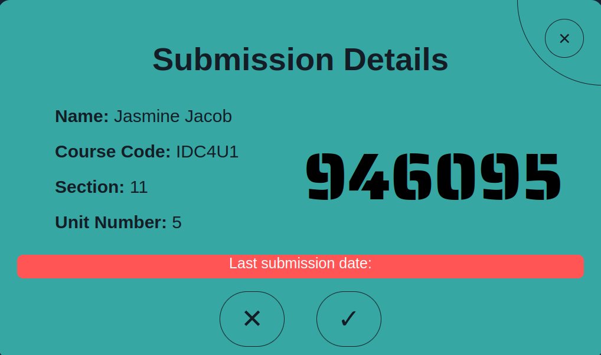

Seamless Unit Submission

The Unit Tracker enables high school students to submit assignments seamlessly, eliminating the hassle of physical submissions. With a user-friendly interface, students can easily upload their work, ensuring a convenient and efficient process.